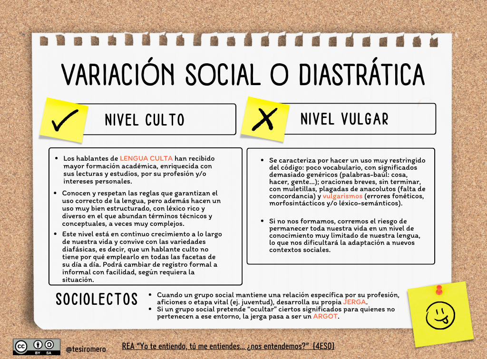
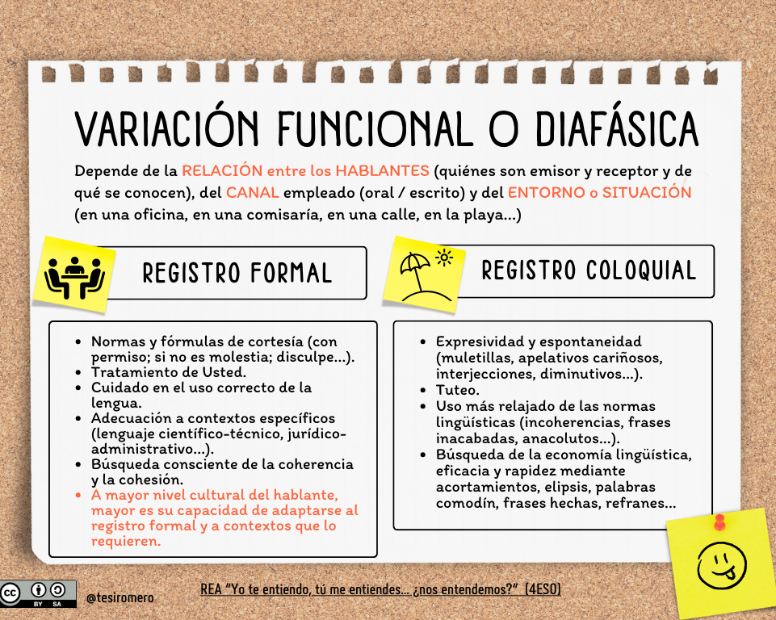

En el esquema anterior se resumen las diferentes variedades que puede mostrar una lengua cuando la observamos en diferentes actos de habla. Dejando a un lado las causas de orden temporal (diacrónicas) y las geográficas (diatópicas), ¿qué otras circunstancias influyen en el modo en que hablamos? ¿Tienes suficiente dominio de tu idioma como para adaptarte con éxito a diferentes situaciones comunicativas? ¿A qué nos referimos cuando decimos que alguien "habla mal"?
Intentad responder a estas cuestiones con la información de las siguientes infografías:
Variedad diastrática o social

Variedad diafásica o funcional
